- Frequency-based guessing as the simplest algorithm for classification. Calculate probabilities of the classes P:
- Improvement with conditional probabilities of the classes:
P (good) = 3/5
P (bad) = 2/5
→ classify "good"
P (red | good) = 1/3
P (young | good) = 1/3
P (red | bad) = 1/2
P (young | bad) = 1/2
What quality is the unknown wine?
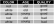
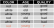
P (good) ⋅ P (red | good) ⋅ P (young | good)
= 3/5 ⋅ 1/3 ⋅ 1/3 = 1/15
P (bad) ⋅ P (red | bad) ⋅ P (young | bad)
= 2/5 ⋅ 1/2 ⋅ 1/2 = 1/10
1/10 is greater than 1/15 → classify "bad"
- Define a distance measure between the data points (observations).
- Define a number k.
- To classify a new observation:
- Find the k nearest neighbors.
- Choose the class that the majority of the nearest neighbors has (majority vote).
- Optional: weight by the distance of the data points: closer neighbors have more influence.
What color is the new observation?
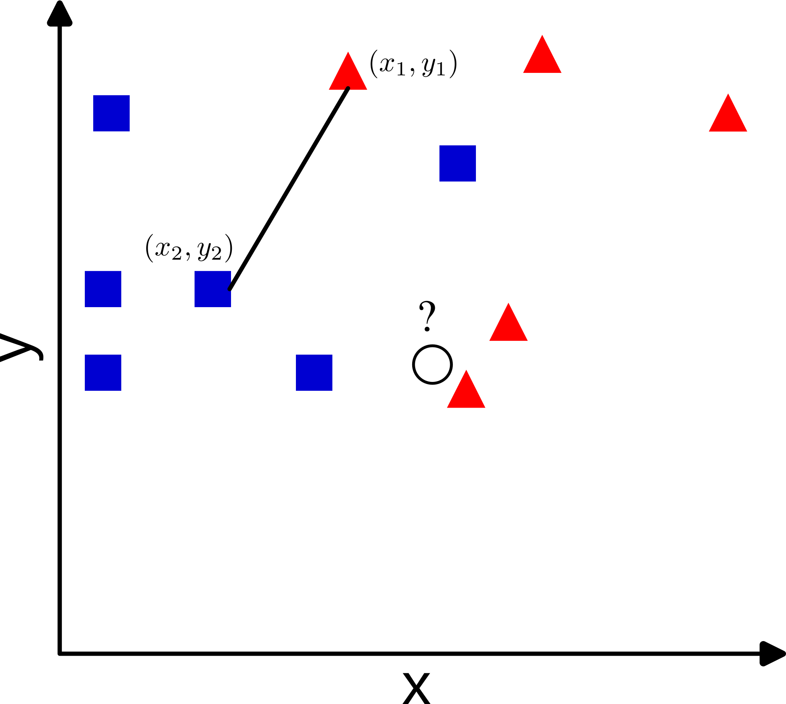
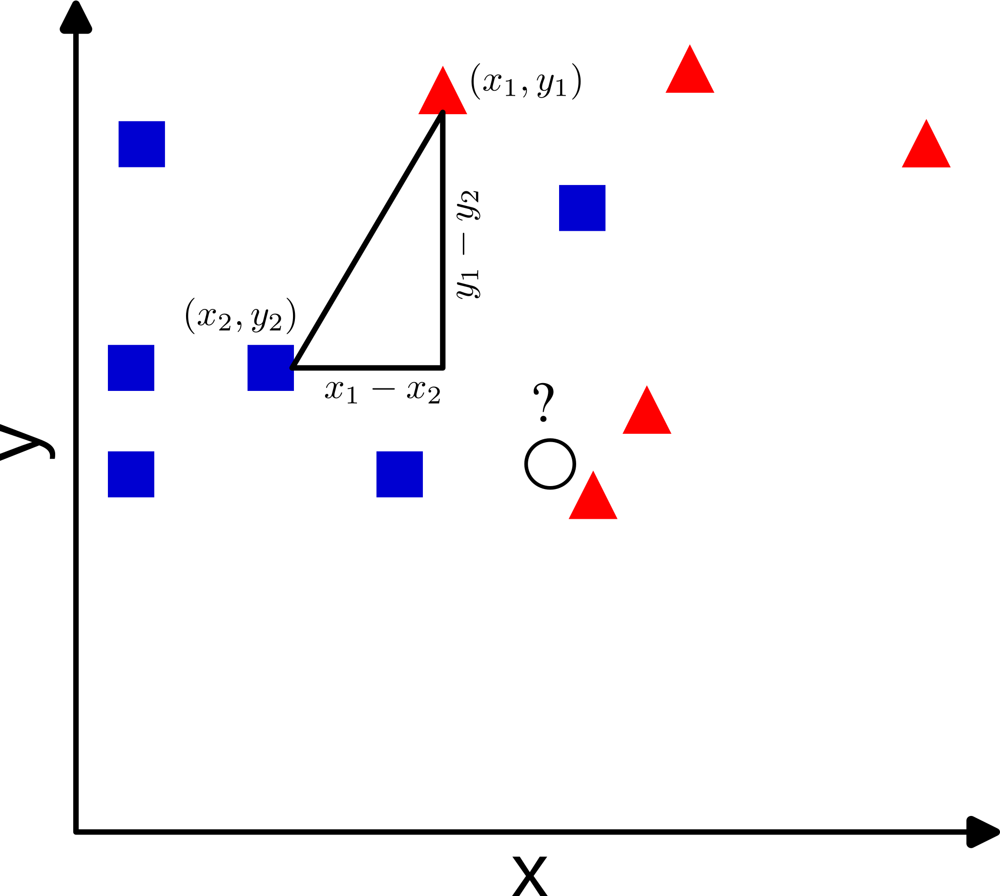
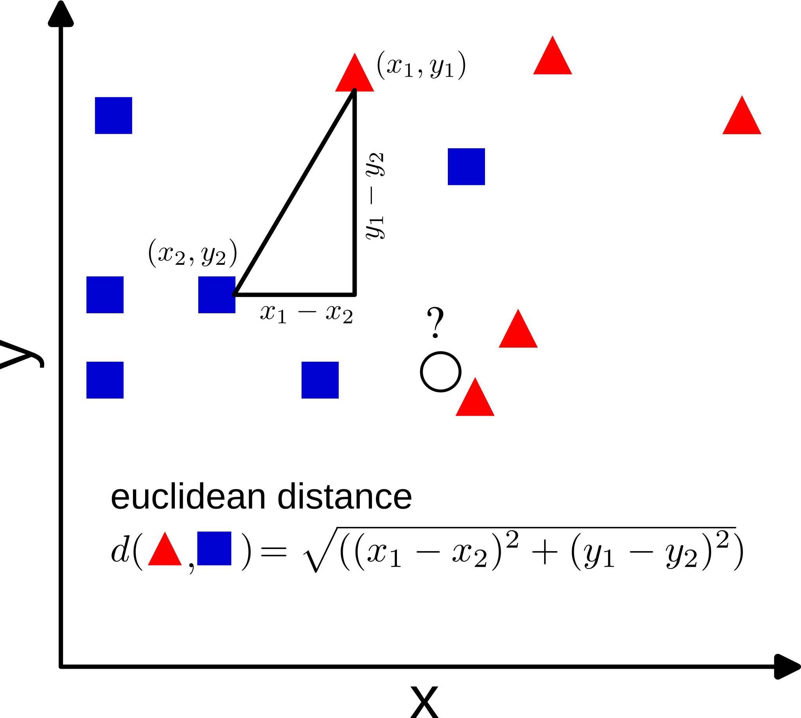
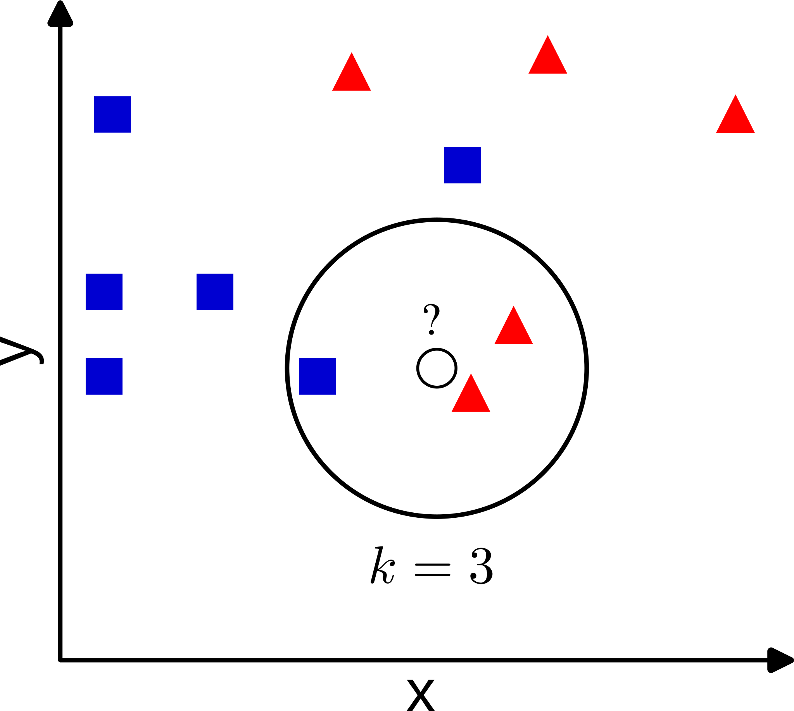

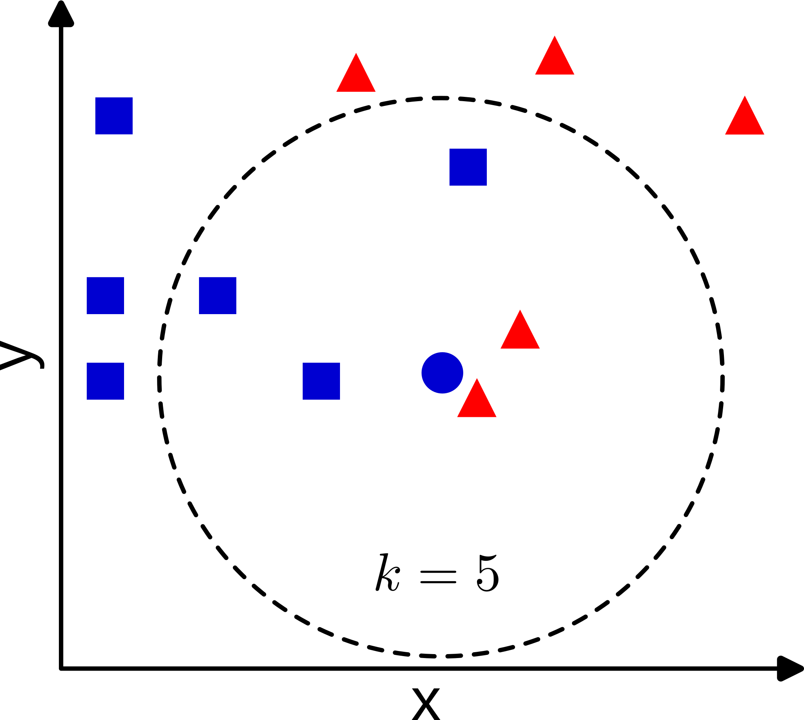
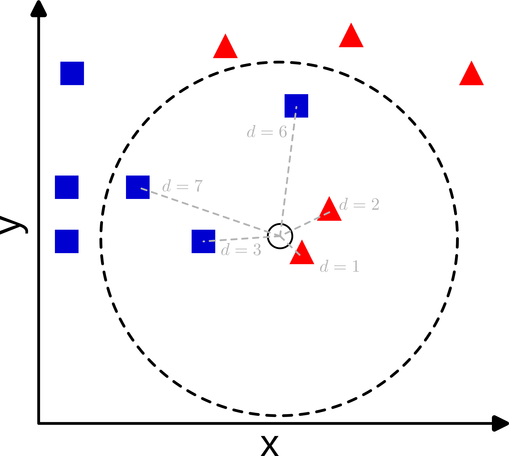
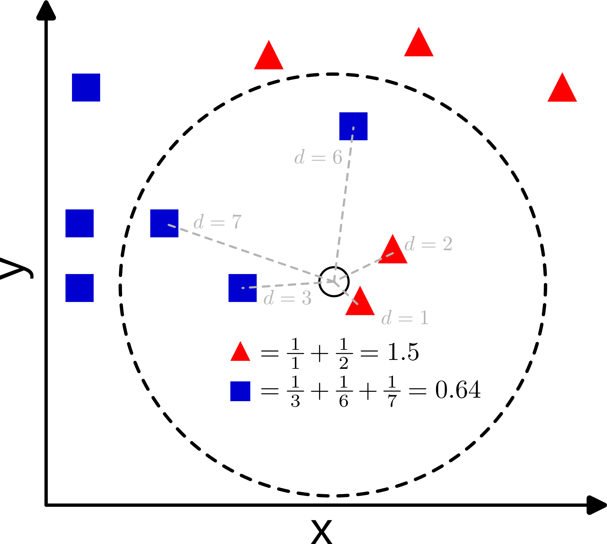
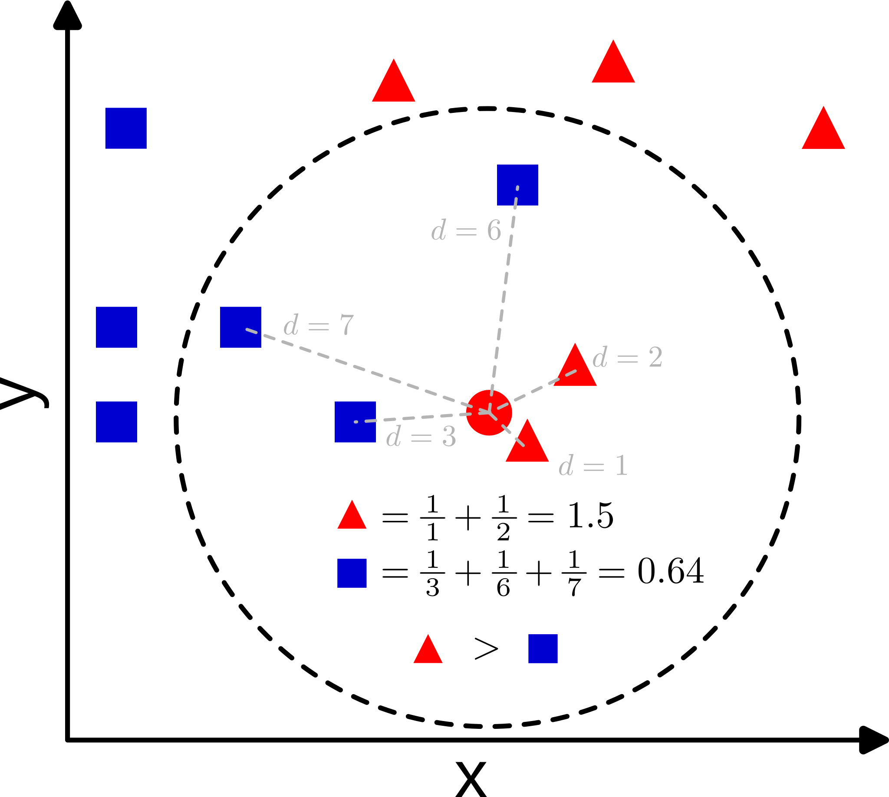
{kind=link}
- Depending on the definition of the algorithm (weighted vs. unweighted), the algorithm's result changes.
- Depending on the choice of k, the result also changes.
- k is also called a hyperparameter of the algorithm. Hyperparameters are used to control the algorithm's functionality.
- Hyperparameters must be adapted (tuned) to the characteristics of the dataset. In the example on the right, k=12 would be meaningless, as there are only 11 data points.
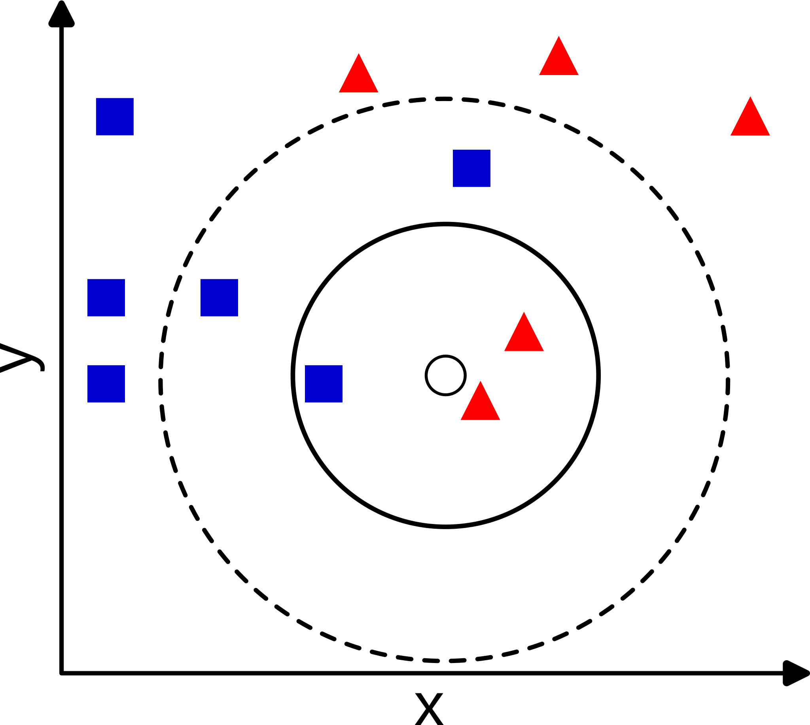
- Each internal node is an attribute.
- Each edge is a value (or range of values) of the source node.
- Each leaf node is a class label.
- Classification: Traversing the decision tree from top to bottom.
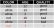
- So far, we have not processed any data to adapt the algorithm.
- We train the algorithm by adjusting the thresholds (parameters) based on the training data until the classes are optimally separated.
Which machine learning algorithm is best for classification?
Without having substantive information about the modeling problem, there is no single model that will always do better than any other model. Because of this, a strong case can be made to try a wide variety of techniques, then determine which model to focus on.
[David Wolpert, The Lack of a priori Distinctions Between Learning Algorithms (1996)]
- There are various algorithms for supervised learning. Examples include:
- Naive Bayes
- k nearest neighbours
- Decision trees
- There is no "best" algorithm, but before a complicated algorithm is trained, it makes sense to have a simple baseline for comparison (e.g., Naive Bayes).
- "Learning" or training of an algorithm takes place by adjusting the parameters based on the training data until an optimal result is achieved.
- Hyperparameters (like the k in "k nearest neighbors") must be chosen such that they are meaningful for a given dataset.
In the next set of inputs, we will learn about ...
- ... neural nets as a powerful architecture for machine learning algorithms. (Lecture 2.1)
- ... how to measure the performance of classification algorithms. (Lecture 2.2)
- ... problems that can occur during algorithm training, namely underfitting, overfitting, bias, and variance. (Lecture 2.3)
- ... more about training data, namely about different data types, and problems that can occur with data. (Lecture 2.4)
- ... an extension of supervised learning to regression – e.g. predicting numerical values instead of classes. (Lecture 2.5)